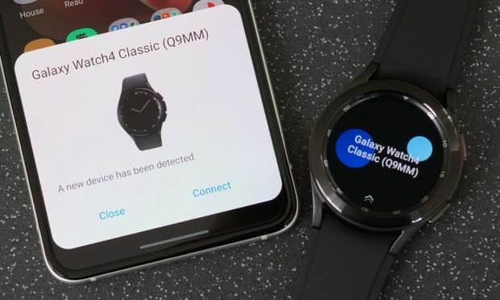
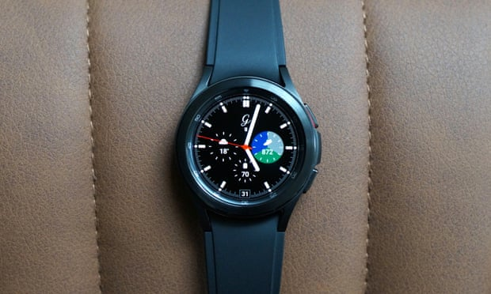
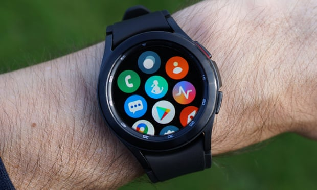
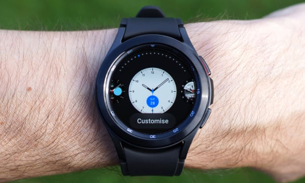
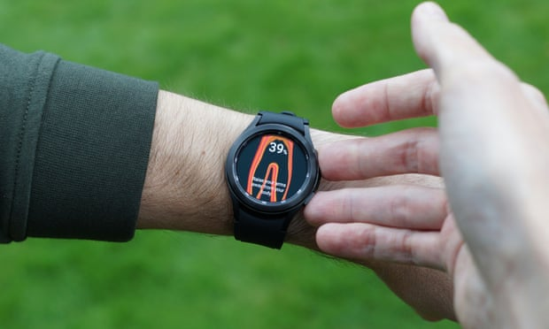
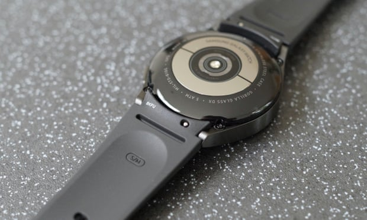

Samsung Galaxy Watch 4 review: Google smartwatch raises bar
The Galaxy Watch 4 is Samsung and Google’s attempt to combine efforts and compete with Apple’s smartwatch – and it gets about 80% of the way there.
The Android smartwatch comes in two designs and four sizes, starting at £249 ($250) for the Watch 4 and £349 ($350) – as tested – for the Watch 4 Classic. They succeed the £269 Watch Active 2 and £399 Watch 3 respectively.
The two designs have the same chips, features and screen sizes, but the stainless steel Classic has Samsung’s jog-dial-like rotating bezel controller, while the standard aluminium Watch 4 has a touch-sensitive ring instead.
The watches are slimmer and have slightly more flare than their predecessors. The 42mm Classic is extremely comfortable and not sweaty to wear with its traditional silicone strap.
The AMOLED screen is excellent: bright, pin-sharp and on all the time if you want it to be. The display is covered in scratch-resistant Gorilla Glass DX+ and the watch is water resistant to 50-metre depths so should prove durable.
Specifications
- Screen: 1.2in or 1.4in AMOLED (~467/455 ppi)
- Case size: 40/44mm or 42/46mm depending on version
- Case thickness: 9.8 or 11/11.2mm
- Band size: standard 20mm
- Weight: 25.9/30.3 or 46.5/52g
- Processor: Samsung Exynos W920
- RAM: 1.5GB
- Storage: 16GB
- Operating system: One UI 3/Wear OS 3 (Android 11)
- Water resistance: 50 metres (5ATM)/IP68
- Sensors: barometer, gyro, HR, ECG, bioelectrical impedance, microphone, speaker, NFC, location, compass
- Connectivity: Bluetooth 5, wifi n, NFC
Faster chip, shorter battery life
On paper the new Exynos W920 chip in the watches is 20% faster with 10% improved graphics performance than their predecessors.
The Classic certainly feels fast and much smoother compared to most Wear OS watches, on a par with the TicWatch Pro 3, but not quite up to the rapid experience of the Apple Watch Series 6.
The battery of the 42mm Classic lasts for just under 25 hours with the screen on all of the time and sleep tracking overnight. The watch typically ends the day with just under 40% battery remaining, falling short of the 36 hours of the Watch 3’s battery. Larger Watch 4 sizes have bigger batteries and may last longer.
A power-saving mode can extend the battery by a few hours, while a “watch only” setting turns everything off except the watch face to last more than nine days. It takes 82 minutes to fully charge using the provided magnetic puck and a standard 2.4A USB power adaptor, reaching 70% in 50 minutes. A power adaptor is not included.
Sustainability
Samsung does not give an expected lifespan for the battery in the Watch 4 but provides a one-year warranty. Batteries in similar devices typically maintain at least 80% of their original capacity for at least 500 full charge cycles.
The Watch 4 is generally repairable and the battery can be replaced by authorised service centres. Its predecessor was one of the most repairable smartwatches available, scoring seven out of 10 with the repair specialists iFixit. The Watch 4 has yet to be rated.
Samsung did not comment on the use of recycled materials in the construction of the watch, but does offer recycling and trade-in schemes and publishes an annual sustainability report and commitments.
 Wear OS 3
The big change for Samsung is the switch from its own Tizen operating system to One UI 3, which is a customised version of Google’s Wear OS 3 that the two companies have co-developed to relaunch the Android-maker’s smartwatch efforts.
On the surface the software looks and behaves almost exactly the same as that on Samsung’s previous watches, which is no bad thing providing a smooth and refined experience.
From the watch face, notifications are shown in panes to the left and customisable “tiles” with at-a-glance information for various apps and functions are to the right. You can swipe between them or turn the bezel. Tapping a tile or notification expands it to access the app or read text, including quick replies to messages via canned responses, voice dictation, keyboard, drawing letters or emojis with your fingers.
Press the top button once to go back to the watch face, twice to switch to your last-used app or press and hold it to speak to Samsung’s voice assistant Bixby, which is quicker than before but still not as slick or capable as competitors. Press the bottom button once to go back one step in an app or press and hold to bring up Samsung Pay.
Samsung plus a little Google
Health and fitness tracking is handled by the comprehensive Samsung Health. It can automatically track walks, runs, swims and a few others, with similar accuracy as high-end running watches. The watch will track 95 different activities covering all the basics and more exotic activities such as skiing, hang-gliding and kitesurfing.
The watch records your heart rate and rhythm (ECG), blood oxygen levels, stress, steps and calorie burn, while prompting you to do some guided stretches if you’ve been sedentary for too long. New for the Watch 4 is advanced sleep tracking, including snore detection that links up to a nearby phone on a bedside table, and body composition analysis. It uses bioelectrical impedance, similar to some smart scales, to estimate the percentage of fat, muscle and water in your body as a better way to monitor health than BMI.
The data it produced matched that from a set of smart scales. Similar to weight measurements, both can vary wildly influenced by how much water I had drunk or how long since my last workout, meaning consistency was the key to useful results.
Samsung Health
Despite being a Google Wear OS watch, most of the apps and services are from Samsung. Google Maps and Google Pay are significant additions, but Google Assistant is not yet available.
Access to the Google Play Store adds a larger library of third-party apps, including Spotify and YouTube Music, both with offline playback support and health and fitness apps, including Strava, Citymapper, Accuweather and lots of third-party watch faces. The 40-strong selection of customisable built-in watch faces is excellent too.
Unlike other Wear OS watches, the Watch 4 cannot be used with an iPhone and many of the more advanced features, such as the ECG function, require it to be connected to a Samsung phone. It also uses the Samsung Galaxy Wearable app to pair, connect and manage settings, not the Wear OS app other smartwatches from Fossil et al use.
Observations
- You can answer or dismiss calls and notifications with shakes of the wrist, which were a bit hit and miss.
- The watch has a small impact on the battery life of the phone it is connected to, consuming roughly 5% battery during a day.
Price
The Samsung Galaxy Watch 4 starts at £249 ($249.99) for the 40mm version and £269 ($279.99) for the 44mm version. The Galaxy Watch 4 Classic costs £349 ($349.99) for the 42mm version and £369 ($379.99) for the 46mm version.
Models with 4G cost an additional £40 ($50) plus a data contract.
 Verdict
Verdict
The Samsung Galaxy Watch 4 is the best smartwatch you can buy for Android, but it’s not a giant leap ahead of its predecessors nor a tremendous relaunch of Google’s Wear OS efforts.
The switch to Wear OS 3 hasn’t hurt functionality and will probably pay dividends later on, opening up greater third-party app support. But for now you have the best of Samsung’s services and experience with the addition of Google Maps, Pay and the Play Store plus slightly better integration with Android smartphones.
It’s faster and smoother than other Android-compatible smartwatches, has comprehensive health tracking, looks good and the bezel controller on the Watch 4 Classic is great. But while the battery life is at least a full 24 hours, it is a little short of best in class, Bixby, is still slower and less capable, you can’t use the Watch 4 with an iPhone and some features don’t work if you use it with an Android device not made by Samsung.
- the best of Samsung plus a little of Google, fast and smooth, excellent display, attractive traditional watch design, bezel control, 50-metre water resistance, comprehensive health and fitness tracking, body composition measurement, Play Store, Google Maps and Pay.
- no Google Assistant yet, leaving the less capable Bixby the only option for voice, some top functions limited to Samsung phones, not compatible with the iPhone, only 25-hours battery with screen on during day.
Pros
Cons
Author
The Guardian
05/12/2021
© 2021 Tech-Week-Tastic Inspired by Samsung, Developed for Samsung